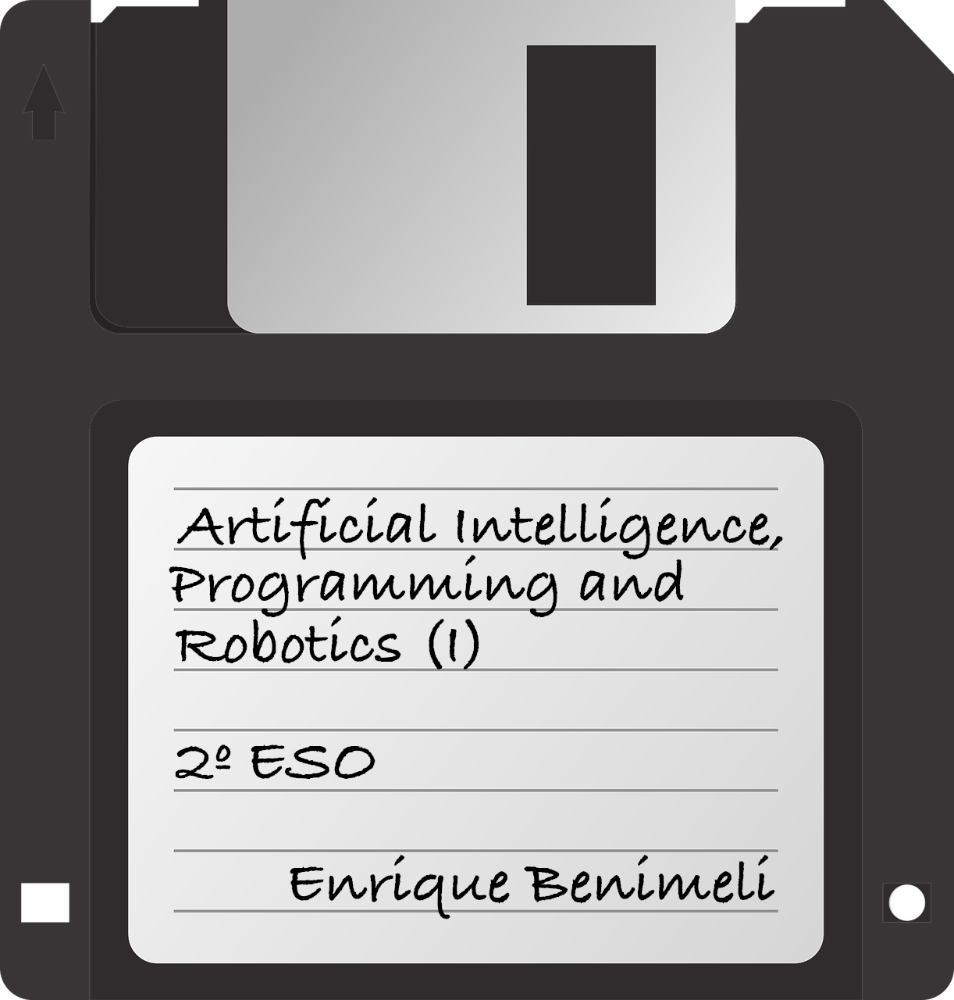

Programación Didáctica
Saberes
Criterios de evaluación
Artificial Intelligence
0. Introduction to AI
1. Learning: Biological Systems and AI
Learning in Biological Systems: Decisions and Free Will
Learning, AI, Programming, and Robots
2. Sensors, typology and applications
Sensors
Types of sensors
Applications
3. Fundamentals of AI
Fundamentals of AI
Decision Trees
Big Data
Neural Networks
4. Basic techniques of AI
Expert systems
Neural networks
Machine learning
5. Automatic information processing
Automatic information processing
6. Equity and inclusion in AI systems. Biases in AI
Equity and inclusion in AI systems
Biases in AI
7. Social and ethical implications of artificial intelligence
Social and ethical implications of artificial intelligence
Programming
0. Introduction to Programming
1. Interpretation of reality through problem modeling
2. Abstraction, sequencing, algorithmic and its representation with natural language and flow diagrams
Introduction
Abstraction and sequencing
Algorithms
Natural Language and Flow Diagrams
3. Pattern detection and reuse. Generalization
None
4. Sustainability and inclusion as software design requirements
None
5. Program flow control structures
None
6. Variables, constants, conditions and operators
None
7. Introduction to programming in high-level languages. Types of languages. Syntax and semantics
None
8. Mobile device application programming
None
9. Software evaluation and maintenance
None
10. Software licenses. Free software and proprietary software
None
11. Controller card simulators
None
12. Initiative, self-confidence and metacognition in the software development learning process
None
Project Rock Paper Scissors Lizard Spock
0. The Project
1. The Game
2. Graphics and Animation
3. Logic and Flow Control
4. Final Version and Testing
Tutorial: Rock, Paper, Scissors
Robotics
0. Introduction to Robotics
Introduction
What is a robot?
Robots and AI
Robots
Robotics and AI
How Engineering Robots Works
1. Robots: Types, Degrees of Freedom, and Basic Technical Characteristics
Item
2. Robot assembly
None
3. Control of robotic systems
Introduction to mBlock
4. Sensors, actuators and controllers
Introduction
Sensors
Actuators
Controllers
mBot
5. Loading and execution of algorithms in robots
None
Project (I): Robot Research
Project (II): mBot Robot Programming
More
Blog
Instagram
Artificial Intelligence, Programming and Robotics (I) - 2.º ESO
»
Search Results
Searching...